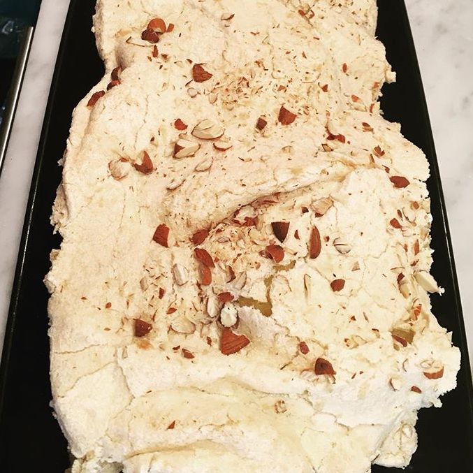

Partytårta
Receptet gäller för 14 bitar
- 100g smör
- 1½ dl strösocker
- 5 ägg
- 4 msk mjölk
- 2 dl vetemjöl
- 2 tsk bakpulver
- 2½ dl strösocker
- 1 dl grovhackad mandel
Fyllning
- 3 dl vispgrädde
- 2 tsk vaniljsocker
- 1 liter färska jordgubbar
Gör så här:
Sätt ugnen på 150°. Vispa smör och socker poröst. Dela äggen i gulor och vitor. Vispa ner en äggula i taget. Rör i mjölken. Blanda mjöl och bakpulver. Rör ner det i smeten.
Vispa vitorna med 1 ½ dl av sockret till ett fast skum. Tillsätt resten av sockret och vispa till en fast marängsmet.
Bred ut smeten till botten i en långpanna med bakplåtspapper ca 30x40 cm. Bred över marängsmeten toppigt. Strö på hackad mandel. Grädda i nedre delen av ugnen ca 30 min. Låt kakan kallna. Dela den på mitten.
Vispa grädden med vaniljsockret. Lägg ihop bottnarna med vaniljgrädden emellan.
Garnera med färska jordgubbar.